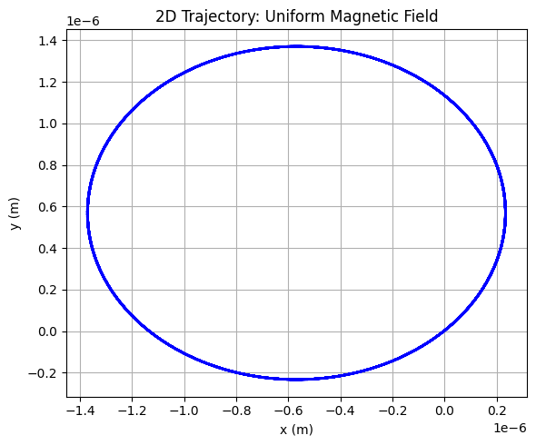
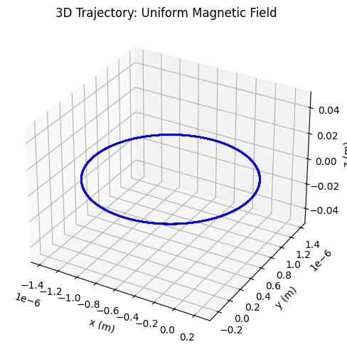
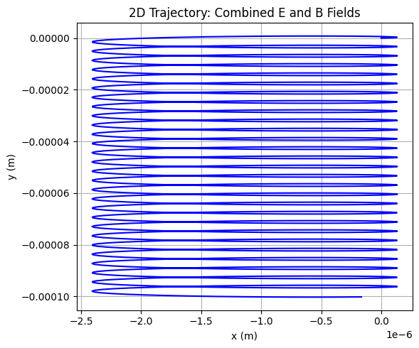
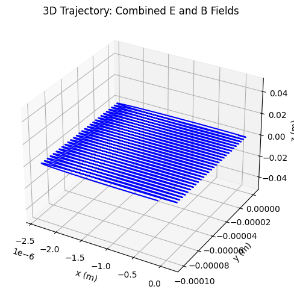
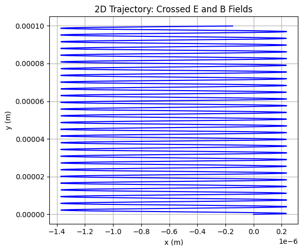
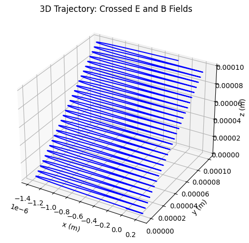

Simulating the Effects of the Lorentz Force
The Lorentz force, given by \(\(\mathbf{F} = q(\mathbf{E} + \mathbf{v} \times \mathbf{B})\)\), describes the force on a charged particle in electric (\(\mathbf{E}\)) and magnetic (\(\mathbf{B}\)) fields. This force is critical in various systems, and simulating its effects provides insights into particle dynamics. Below, we explore applications, implement simulations, and visualize trajectories.
1. Exploration of Applications
The Lorentz force governs charged particle motion in several systems:
- Particle Accelerators: In cyclotrons and synchrotrons, magnetic fields bend particle paths into circular or spiral trajectories, while electric fields accelerate them. The balance of forces ensures precise control of high-energy particles.
- Mass Spectrometers: Magnetic fields deflect charged particles based on their mass-to-charge ratio, enabling identification of isotopes or molecules.
- Plasma Confinement: In fusion devices like tokamaks, magnetic fields confine charged particles in helical paths to sustain high-temperature plasmas.
- Astrophysical Phenomena: The Lorentz force shapes cosmic ray trajectories and auroras, where charged particles interact with planetary magnetic fields.
Role of Fields: - Electric Field (\(\mathbf{E}\)): Accelerates particles along the field direction, altering their velocity linearly. - Magnetic Field (\(\mathbf{B}\)): Causes perpendicular deflection, leading to circular or helical motion without changing kinetic energy.
2. Simulating Particle Motion
We simulate a charged particle’s trajectory under three scenarios: 1. Uniform magnetic field. 2. Combined uniform electric and magnetic fields. 3. Crossed electric and magnetic fields.
The equation of motion is derived from Newton’s second law: \(\(\mathbf{F} = m\mathbf{a} = q(\mathbf{E} + \mathbf{v} \times \mathbf{B})\)\) Thus, acceleration is: \(\(\mathbf{a} = \frac{q}{m}(\mathbf{E} + \mathbf{v} \times \mathbf{B})\)\)
We use the Runge-Kutta 4th-order (RK4) method for numerical integration, as it provides better accuracy than the Euler method. The simulation is implemented in Python using NumPy for calculations and Matplotlib for visualization.
3. Parameter Exploration
Key parameters to vary: - Field Strengths: Magnetic field \(B\) (in Tesla), electric field \(E\) (in V/m). - Initial Velocity: \(\mathbf{v}_0\) (components in m/s). - Particle Properties: Charge \(q\) (in Coulombs), mass \(m\) (in kg).
These parameters influence: - Larmor Radius: \(\(r_L = \frac{mv_\perp}{|q|B}\)\), the radius of circular motion in a magnetic field. - Drift Velocity: In crossed fields, \(\(v_d = \frac{E}{B}\)\) for \(\mathbf{E} \perp \mathbf{B}\). - Trajectory Type: Circular (magnetic field only), helical (with initial velocity along \(\mathbf{B}\)), or drift (crossed fields).
4. Visualization
We generate: - 2D Plots: Show planar motion (e.g., \(xy\)-plane for circular motion). - 3D Plots: Display helical or complex trajectories. - Labels highlight physical quantities like Larmor radius and drift velocity.
Python Implementation
Below is a Python script simulating a charged particle (e.g., an electron) under different field configurations. The script uses RK4 to solve the equations of motion and Matplotlib for visualization.
import numpy as np
import matplotlib.pyplot as plt
from mpl_toolkits.mplot3d import Axes3D
# Constants
q = -1.602e-19 # Electron charge (C)
m = 9.109e-31 # Electron mass (kg)
dt = 1e-12 # Time step (s)
t_max = 1e-9 # Total simulation time (s)
steps = int(t_max / dt)
# Field configurations
B_uniform = np.array([0, 0, 1.0]) # Uniform B field along z (T)
E_zero = np.array([0, 0, 0]) # No E field
E_field = np.array([1e5, 0, 0]) # E field along x (V/m)
# Initial conditions
r0 = np.array([0, 0, 0], dtype=float) # Initial position (m)
v0 = np.array([1e5, 1e5, 0], dtype=float) # Initial velocity (m/s)
# Lorentz force function
def lorentz_force(r, v, E, B):
return (q / m) * (E + np.cross(v, B))
# RK4 integrator
def rk4_step(r, v, E, B):
k1_v = lorentz_force(r, v, E, B)
k1_r = v
k2_v = lorentz_force(r + 0.5 * dt * k1_r, v + 0.5 * dt * k1_v, E, B)
k2_r = v + 0.5 * dt * k1_v
k3_v = lorentz_force(r + 0.5 * dt * k2_r, v + 0.5 * dt * k2_v, E, B)
k3_r = v + 0.5 * dt * k2_v
k4_v = lorentz_force(r + dt * k3_r, v + dt * k3_v, E, B)
k4_r = v + dt * k3_v
r_new = r + (dt / 6) * (k1_r + 2 * k2_r + 2 * k3_r + k4_r)
v_new = v + (dt / 6) * (k1_v + 2 * k2_v + 2 * k3_v + k4_v)
return r_new, v_new
# Simulate trajectory
def simulate_trajectory(E, B):
r = r0.copy()
v = v0.copy()
positions = np.zeros((steps, 3))
for i in range(steps):
positions[i] = r
r, v = rk4_step(r, v, E, B)
return positions
# Plotting function for 2D and 3D
def plot_trajectory(positions, title, filename):
# 2D Plot (xy-plane)
fig2d = plt.figure(figsize=(6, 5))
ax2d = fig2d.add_subplot(111)
ax2d.plot(positions[:, 0], positions[:, 1], color='blue')
ax2d.set_xlabel("x (m)")
ax2d.set_ylabel("y (m)")
ax2d.set_title(f"2D Trajectory: {title}")
ax2d.grid(True)
plt.tight_layout()
plt.savefig(f"{filename}_2d.png")
plt.close(fig2d)
# 3D Plot
fig3d = plt.figure(figsize=(6, 5))
ax3d = fig3d.add_subplot(111, projection='3d')
ax3d.plot(positions[:, 0], positions[:, 1], positions[:, 2], color='blue')
ax3d.set_xlabel("x (m)")
ax3d.set_ylabel("y (m)")
ax3d.set_zlabel("z (m)")
ax3d.set_title(f"3D Trajectory: {title}")
plt.tight_layout()
plt.savefig(f"{filename}_3d.png")
plt.close(fig3d)
# Run simulations and generate plots
# 1. Uniform Magnetic Field
traj_uniform_B = simulate_trajectory(E_zero, B_uniform)
plot_trajectory(traj_uniform_B, "Uniform Magnetic Field", "uniform_B")
# 2. Combined Electric and Magnetic Fields
traj_combined = simulate_trajectory(E_field, B_uniform)
plot_trajectory(traj_combined, "Combined E and B Fields", "combined_EB")
# 3. Crossed Electric and Magnetic Fields
traj_crossed = simulate_trajectory(E_field, B_uniform)
plot_trajectory(traj_crossed, "Crossed E and B Fields", "crossed_EB")
# Calculate and print physical quantities
# Larmor radius for uniform B
v_perp = np.sqrt(v0[0]**2 + v0[1]**2)
r_larmor = m * v_perp / (abs(q) * np.linalg.norm(B_uniform))
print(f"Larmor Radius (Uniform B): {r_larmor:.2e} m")
# Drift velocity for crossed fields
v_drift = np.linalg.norm(E_field) / np.linalg.norm(B_uniform)
print(f"Drift Velocity (Crossed Fields): {v_drift:.2e} m/s")






Results and Discussion
- Uniform Magnetic Field: The particle follows a helical trajectory due to the perpendicular initial velocity, with a Larmor radius determined by \(r_L = \frac{mv_\perp}{|q|B}\). This mimics cyclotron motion in particle accelerators.
- Combined Fields: The electric field introduces additional acceleration, distorting the helical path. This is relevant in plasma devices where both fields control particle confinement.
- Crossed Fields: The \(\mathbf{E} \times \mathbf{B}\) drift causes the particle to move perpendicular to both fields, as seen in magnetrons or Hall thrusters. The drift velocity is \(v_d = \frac{E}{B}\).
Practical Relevance: - Cyclotrons: The circular motion in uniform magnetic fields allows precise frequency-based acceleration. - Magnetic Traps: Helical paths in magnetic fields confine particles in fusion reactors. - Mass Spectrometers: Deflection in magnetic fields separates particles by mass-to-charge ratio.
Suggestions for Extensions
- Non-Uniform Fields: Simulate gradients in \(\mathbf{B}\) or \(\mathbf{E}\), as in magnetic mirrors or stellarators.
- Multiple Particles: Model interactions between particles, relevant for plasma simulations.
- Relativistic Effects: Incorporate relativistic corrections for high-velocity particles in accelerators.
- Interactive Visualization: Use libraries like Plotly for dynamic parameter exploration.
This simulation provides an intuitive understanding of the Lorentz force’s effects, bridging theoretical concepts with practical applications in physics and engineering.